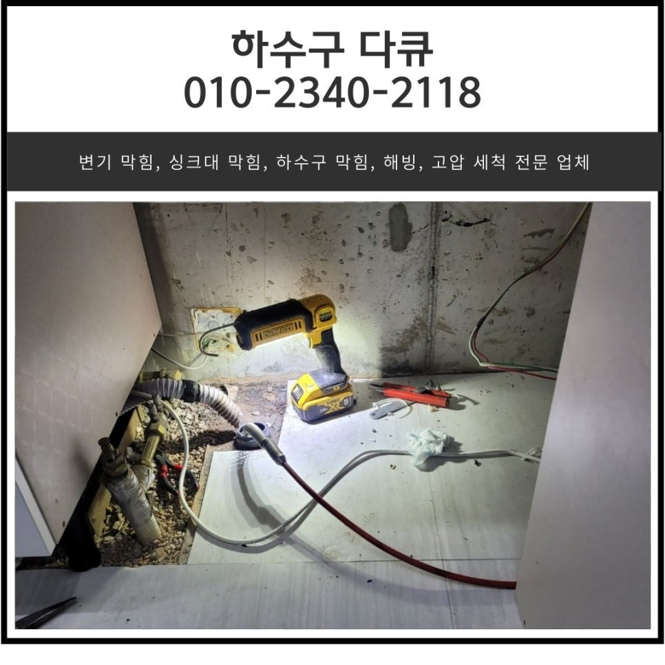
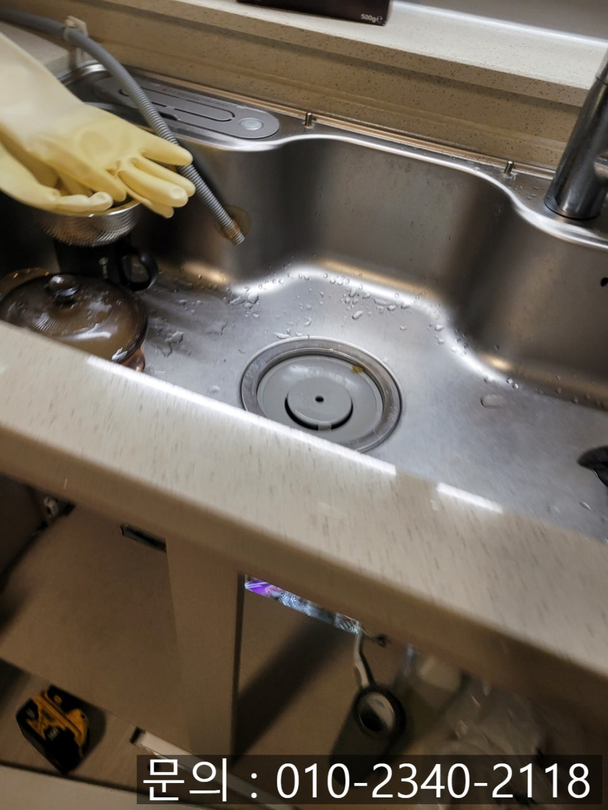
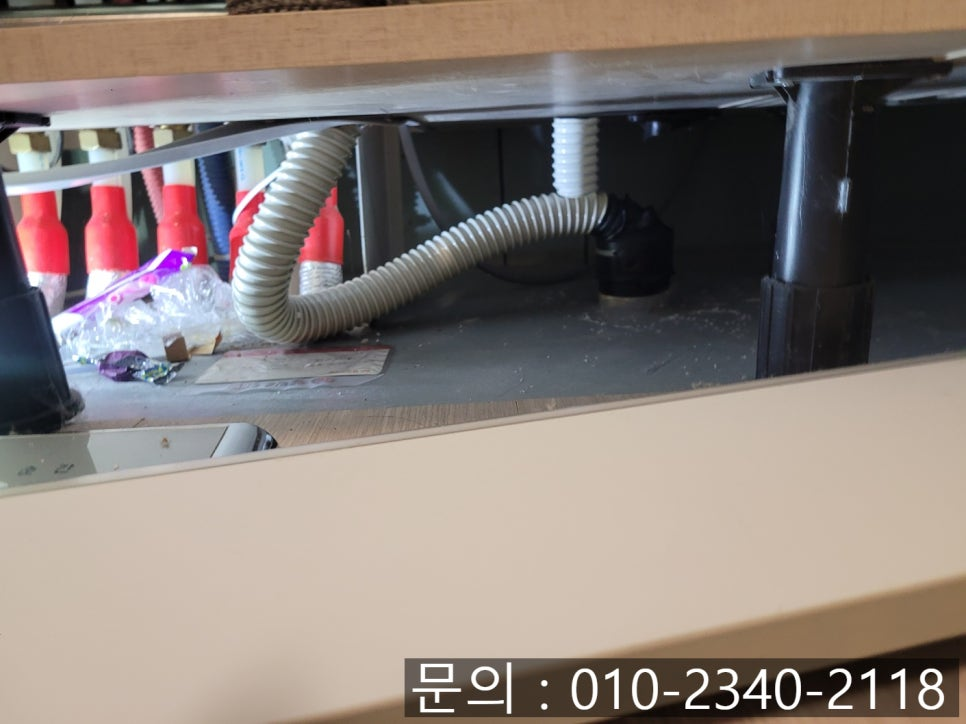
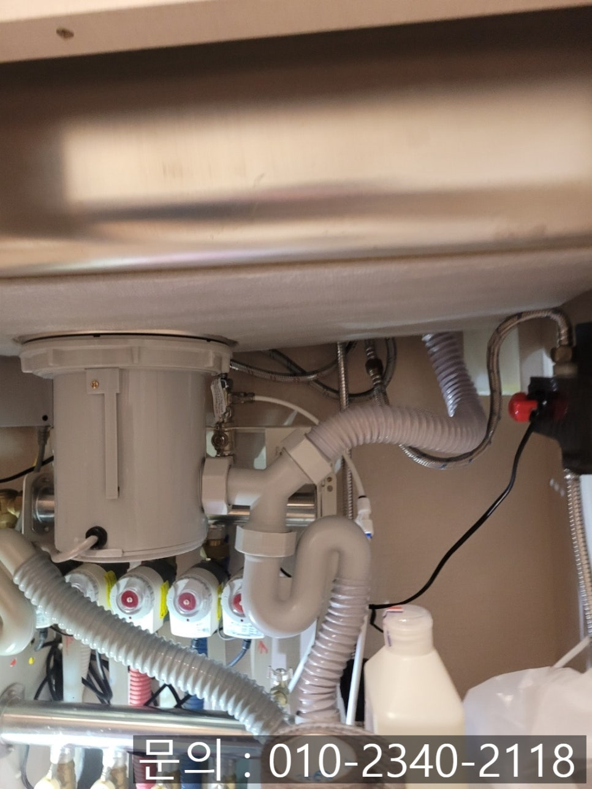
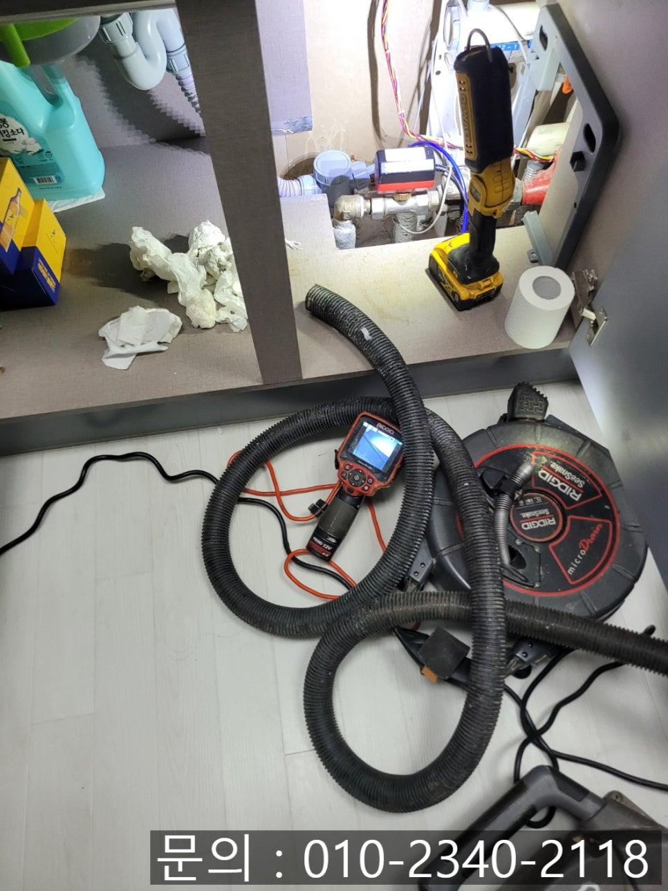
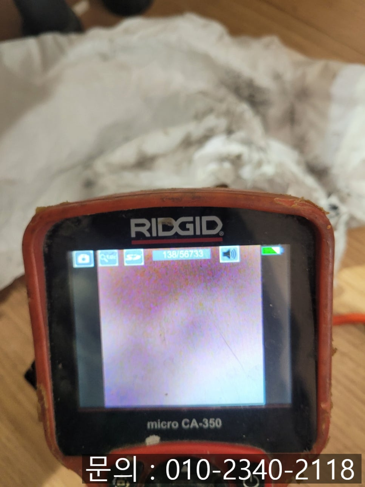
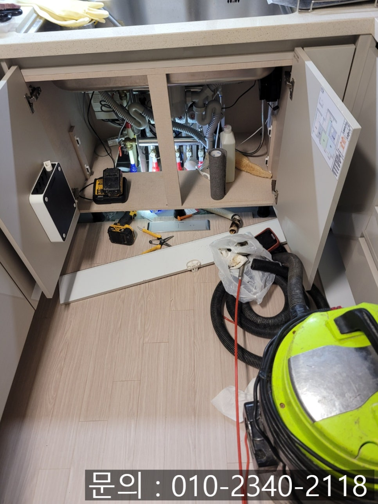

🏠 율천동 싱크대 막힘 수원 정자동 빌라 하수구 역류 배관 청소 업체
수원 싱크대막힘 전문 시공 후기

📋 작업 개요
- 위치: 수원
- 서비스 유형: 싱크대막힘, 하수구막힘, 배관막힘, 역류해결, 배관청소
- 작업 일시: 2025. 2. 28. 17:39
- 업체명: 하수구수사대 (010-5615-2118)
🔍 문제 상황
안녕하세요.
율천동 싱크대 막힘, 수원 정자동 빌라 하수구 역류 배관 청소 업체 하수구 다큐입니다.
율천동 싱크대 막힘 문제의 경우 많은 가정에서 흔히 나타나는 문제 중 하나입니다.
많은 사람들이 한 건물에서 생활하고 있는 아파트나 빌라 등의 공동 주택의 경우 배관이 연결되어 있다 보니, 한세대에서 문제가 발생할 경우 자칫 다른 세대까지 문제가 발생할 수 있어 신경 써서 관리해야 합니다.
오늘 소개해 드릴 현장도 빌라에서 율천동 싱크대 막힘이 발생해 연락을 받았습니다.
빌라에 거주하면서 한 번도 이런 적이 없었는데 얼마 전부터 싱크대에서 물을 사용하면 천천히 흘러가길래 대수롭지 않게 생각하셨다고 해요.
그런데 며칠이 지나도 좋아질 기미는 보이지 않고 배수되는 속도가 더 느려지더니 아예 내려가지 않고 있다고 하셨습니다.
싱크대에서 사용한 물이 내려가지 않을 때 얼마나 불편할지 누구보다 잘 알고 있는 하수구 다큐는 고객님께 주소를 받아 신속하게 현장으로 방문했어요.

🔎 원인 분석
💡 전문가 진단: 정밀 진단 장비를 사용하여 슬러지의 고착 여부를 판명하고 타격/세척 작업을 실시했습니다.
우선 싱크대를 둘러보며 문제점을 찾기 시작했습니다.
걸레 받이를 내려놓고 싱크대 배수구와 하수구를 연결하는 주름 배관을 살펴보니 길게 늘어져 있는 것을 어렵지 않게 찾아볼 수 있었어요.
주름 배관이 수직으로 짧게 연결되어 있어야 빠르게 내려가면서 배관에 이물질이 쌓이지 않고 흘러갈 텐데요.
저렇게 길게 가로로 늘어져 있는 경우 물이 흐르는 속도도 느려지면서 배관에 이물질이 쌓이기 좋은 환경이 됩니다.
특히 많은 양의 물을 사용하지 않을 경우 바닥에 누워있는 배관에 물이 고여있을 수도 있겠죠?
그러면서 곰팡이가 생기거나 배관 내부에 이물질과 함께 썩어 악취까지 발생할 수 있습니다.
수원 정자동 빌라 하수구 역류 배관 청소 업체 하수구 다큐는 싱크대 외부에서 찾을 수 있는 문제점에 대해 고객님께 설명해 드리고, 배관 내부를 막고 있는 근본적인 원인을 찾아보기로 했습니다.
싱크대 막힘의 근본적인 원인을 알아보기 위해서는 배관 내부를 막고 있는 이물질이 어떤 것인지 정확하게 파악해야 합니다.

🔧 작업 과정
간혹 고객님들도 모르는 사이에 음식을 만들 때 사용하는 이쑤시개가 배관으로 들어가 물의 흐름을 방해하기도 하고, 일회용 비닐이 들어가 막는 경우도 비일비재하기 때문에 내시경 카메라를 진입시켜 확인해야 합니다.
배관 전용 내시경 카메라를 배관 안쪽으로 넣어보니 기름 슬러지와 각종 이물질로 인해 배관 내부가 막혀있어 물이 흘러가지 못하는 게 확인되었습니다.
다행히 기름 슬러지, 음식물 찌꺼기 이외에 다른 이물질은 없는 상태였어요.
싱크대 막힘의 원인을 파악하였으니 그에 맞는 장비를 이용해 정자동 빌라 하수구 역류 배관 청소를 진행하기로 했습니다.
우선 강한 흡입력의 석션을 사용해 배관에 차있는 이물질을 제거하는 작업을 진행했어요.
물과 기름 슬러지 등이 석션에 빨려 들어왔지만 오랜 시간 쌓여있던 이물질이다 보니 완벽하게 청소하는 것은 역부족이었습니다.
남은 이물질의 경우 내시경 카메라로 확인하며 플렉스 샤프트 장비를 사용해 잘게 부서 제거하는 작업을 진행하기로 했어요.
플렉스 샤프트는 노즐 끝에 달린 체인이 배관 내부에서 빠르고 강하게 회전하면서 이물질을 잘게 부서 주는 역할을 합니다.
잘게 갈린 기름 슬러지와 각종 이물질은 배관으로 떨어져 나오는데요.
이때 석션으로 빨아드려 완벽하게 제거하는 작업을 이용해 배관 청소를 진행해 드렸어요.
배관 청소를 하기 전 내시경 카메라를 진입시켰을 때 붉게만 보였는데 청소를 끝내자 깨끗해진 것을 확인할 수 있었습니다.
전세 연장하시면서 몇 년을 더 거주해야 하는데, 앞으로는 걱정 없이 싱크대를 사용해도 되겠다며 좋아해 주셔서 뿌듯했던 현장이었습니다.


✅ 작업 완료
싱크대를 오랜 시간 사용하다 보면 배관에 이물질이 쌓일 수밖에 없어요.
지금 싱크대 문제로 고민하고 계신다면 연락 주세요.
완벽하게 청소해 드리겠습니다.
경기도 수원시 장안구 서부로 2139 5층 5032호




⚠️ 주방 싱크대 배관 막힘 예방 수칙
- ✅ 기름기가 묻은 식기나 프라이팬은 설거지 전 키친타올로 반드시 기름때를 닦아내세요.
- ✅ 주기적으로 싱크대 개수대에 뜨거운 물을 가득 받아 한 번에 내려 배관 내부 기름을 씻어내세요.
- ✅ 배수구 거름망을 미세한 필터로 사용하시고 음식물 찌꺼기가 틈으로 새어 들지 않게 관리하세요.
- ✅ 베이킹소다와 식초를 뜨거운 물과 함께 일주일에 한 번씩 부어주면 배관 살균과 막힘 예방에 좋습니다.
💡 핵심 정리
- 확실한 장비 작업(내시경 점검 및 샤프트 스케일링)으로 원인을 뿌리 뽑습니다.
- 작업 후 1년 이내에 동일한 부위 재발 시 100% 무상 A/S 서비스를 보장합니다.
- 서울 · 경기 · 인천 전 지역에 24시간 언제든 긴급 출동할 수 있도록 항시 대기 중입니다.
❓ 자주 묻는 질문 (FAQ)
🚨 수원 싱크대막힘 문제로 고민이신가요?
정확한 원인 진단과 확실한 시공으로 재발 없는 해결을 약속드립니다.
24시간 긴급 출동 | 서울 · 경기 · 인천 전지역 | 1년 내 재발 시 무상 A/S